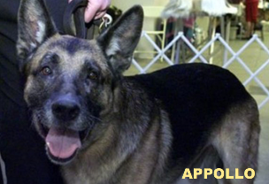

Nominees
Dogs have had a major impact on the world. Man's best friend has helped humans to hunt, farm, and perform daily functions in life. This is a general breakdown of some dog breeds and their typical contribution to the community. It should be noted that many dogs can fit into multiple categories.
Dog Breeds
Hero: German Shepherd, Labrador Retriever, Vizsla, Dalmatian, Golden Retriever
Work: Bernese Mountain Dog, Rottweiler, Doberman Pinscher, Husky, Bloodhound
Companion: German Short-haired Pointer, Beagle, French Bulldog, Pug, Chihuahua
| Hero | Work | Companion |
|---|---|---|
| German Shepherd | Bernese Mountain Dog | German Short-haired Pointer |
| Labrador Retriever | Rottweiler | Beagle |
| Vizsla | Doberman Pinscher | French Bulldog |
| Dalmatian | Husky | Pug |
| Golden Retriever | Bloodhound | Chihuahua |
5 Famous Dogs In History
These are some of the truly famous dogs of the 20th century.
- Appollo (German Shepherd)
- Clobberhead (Greyhound)
- Togo (Siberian Husky)
- Sergeant Stubby (Mixed Terrier)
- Zanjeer (Labrador Retriever)
Appollo (German Shepherd)
Appollo is a famous police dog known best as being the first rescue dog on the scene at the World Trade Centers during the September 11 attacks. He and his handler, Peter Davis, were involved in the search and rescue missions during 9/11 and faced death to save people from the fallen buildings. Appollo received the Dickin Medal, which is the animal version of the Victoria Cross, for his service rescuing citizens from the towers.
Clobberhead (Greyhound)
Two months after Clobberhead was adopted by the Cramer family, he literally prevented a potentially deadly disaster using his sharp senses. With his ever-efficient nose, he knew from the very start that something was wrong in the house. He displayed some weird behaviors in order to grab his owner’s attention- behaviors such as avoiding a certain room or refusing to go out of the house. Finally, a family member, Erin Cramer, took heed of the behaviors and went to investigate. Clobberhead led the way, guiding her to some shocking discoveries. She discovered two major faults in her home- a gas leakage and her hot water heater giving out sparks. These 2 hazards combined would have destroyed not only her house, but her surrounding neighbor’s houses as well.
Togo (Siberian Husky)
Togo (1913 – 1929) was the lead sled dog of Leonhard Seppala and his dog sled team in the 1925 serum run to Nome across central and northern Alaska. Togo was a Siberian Husky who traveled a round trip of 325 miles through subzero temperatures of the arctic to hand off a diphtheria serum for the citizens of Nome, Alaska. At one point during the trip, Seppala was unable to see through the storm, but Togo led the team in a straight line through the dark to safety.
Sergeant Stubby (Boston Terrier)
The most decorated war dog of World War I was a Boston terrier named Sergeant Stubby. Official mascot of the 102nd Infantry Regiment for the United States, Stubby served through seventeen battles over the course of 18 months in France. He protected his regiment from mustard gas, and even held a German soldier by the seat of his pants until his team could find him. Even through multiple grenade and gas injuries, Sergeant Stubby continued serving until he returned home and later became mascot for Georgetown University.
Zanjeer (Labrador Retriever)
This Labrador retriever saved thousands of lives during the serial bomb blasts in March 1993 by detecting more than 3,329 kg of the explosive RDX, 600 detonators, 249 hand grenades, and 6,406 rounds of live ammunition. He was buried with full honors during a ceremony attended by senior police officials. He is Mumbai’s most famous dog.